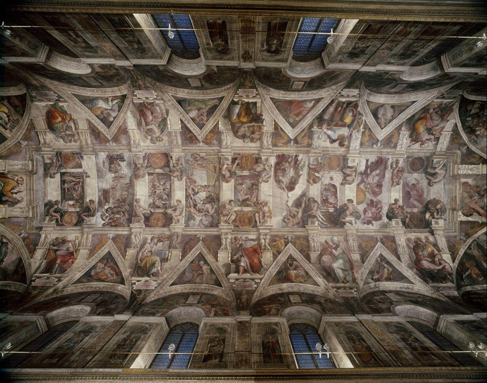

LESSON 7.03
Michelangelo: The Human Body as Glory
Interactive Lesson
📖 TODAY'S FOCUS
How can a block of marble or a wet plaster ceiling be made to celebrate the human body itself?
If the Renaissance returned art to the human being, Michelangelo carried that idea to its peak. He studied anatomy until he could carve a tense, breathing figure from stone and paint hundreds of bodies across a chapel ceiling, treating the human form as the highest subject art could hold.
🎯 BY THE END OF THIS LESSON YOU WILL BE ABLE TO…
1
I will be able to explain idealized form and contrapposto and connect them back to Greek sculpture.
2
I will be able to describe fresco technique and why disegno mattered to High Renaissance artists.
3
I will be able to analyze Michelangelo's David with the four-step method and recognize the High Renaissance style.
📋 WHAT YOU NEED FOR THIS LESSON
▶
A notebook or open Word document for four-step analysis notes and the Unit 7 Quiz review
▶
Your memory of Greek contrapposto from Unit 4; we will return to it today
📚 PART 1 · LOOK FIRST~12 MIN
👀 LOOK CLOSELY · THE WEIGHT OF A BODY
Look at David on the left. He is not in motion, but he is not at rest either. His weight rests on one leg, his head turns, a vein stands out on his lowered hand: he is a young man deciding to act. Now look up at the ceiling on the right, crowded with powerful figures. What do these two very different works have in common?

David, Michelangelo, 1501–1504. Galleria dell'Accademia, Florence. Photograph by Livioandronico2013, licensed CC BY-SA 4.0, via Wikimedia Commons.

Sistine Chapel Ceiling, Michelangelo, 1508–1512. Vatican. Public domain.
Both works make the human body their glory. David is carved from a single block of marble more than four meters tall; the ceiling covers hundreds of square meters with painted figures. Both belong to the High Renaissance, the brief peak around 1500 to 1520 when Leonardo, Raphael, and Michelangelo brought the period's ideals to their fullest balance and confidence.
📚 PART 2 · IDEAL BODIES, DRAWN AND PAINTED~16 MIN
Michelangelo did not copy any single model exactly. He carved and painted idealized form: the human body shown more perfect, balanced, and powerful than any real person, built from years of anatomy study. To give a standing figure life, he used contrapposto, the relaxed stance in which the weight rests on one leg so the hips and shoulders tilt in opposite directions. This is a direct callback to ancient Greek sculpture from Unit 4; the Renaissance recovered it as part of its rebirth of the classical.
For the Sistine Chapel ceiling, Michelangelo worked in fresco: pigment painted directly into fresh, wet plaster so the color binds into the wall as it dries. Fresco is fast and unforgiving; the artist must finish each section before the plaster sets, with no easy way to correct mistakes. Underneath all of it lay disegno, the Italian word for both drawing and design. To Michelangelo and his contemporaries, disegno was the foundation of all art: the skill of drawing the figure correctly, and the thinking and planning that drawing makes possible.
📚 PART 3 · READ THE SCULPTURE~15 MIN
🔍 ARTWORK SPOTLIGHT
David (1501–1504)
Michelangelo · Galleria dell'Accademia, Florence (High Renaissance)
Describe: A nude young man stands over four meters tall in white marble. His weight rests on his right leg, his left hand lifts a sling over his shoulder, and his head turns sharply to the left with a tense, watchful expression.
Analyze: Contrapposto gives the figure living balance; idealized form shapes the muscles and proportions; the alert line of the gaze and the raised veins build tension in a still pose.
Interpret: Michelangelo shows David in the moment before battle, not in triumph after it. One reading is that the statue celebrates human courage and reason poised to act, a fitting emblem for the Florentine republic that commissioned it.
Judge: It succeeds as one of the supreme achievements of Western sculpture: it makes cold marble seem to think, breathe, and gather itself for action.
⚠️ WORTH KNOWING · AI & ANATOMY
Michelangelo's command of the body came from disegno: years of drawing from life and studying anatomy directly. An AI image generator can produce a convincing figure quickly, but it learns from existing pictures and often makes anatomical errors, such as extra fingers or joints that bend the wrong way, because it has no real understanding of how a body is built. AI can assemble a likeness; it cannot study a body the way disegno requires. Learning to draw the figure yourself is how you gain the eye to catch those errors.
📖 VOCABULARY FROM THIS LESSON
| Fresco | Painting pigment into fresh, wet plaster so the color binds into the wall as it dries. |
| Contrapposto | A relaxed standing pose with weight on one leg so hips and shoulders tilt in opposite directions. |
| Idealized form | The human body shown more perfect and balanced than any real person. |
| Disegno | The Italian term for drawing and design, seen as the foundation of all art. |
| High Renaissance | The brief peak (c. 1500–1520) of Leonardo, Raphael, and Michelangelo. |
✏️ NOW YOU TRY · IN YOUR NOTEBOOK
Stand up and try contrapposto yourself: shift your weight onto one leg and notice how your hips and shoulders tilt. Then, in two or three sentences, explain how David's pose shows the same idea, and name one place idealized form appears in the statue. These notes help you review for the Unit 7 Quiz.
➡️ WHAT YOU’LL DO NEXT
1
Medieval vs. Renaissance Worldviews (discussion)
Compare how medieval and Renaissance art saw the human being.
2
Unit 7 Quiz
Take the short auto-graded quiz on the whole unit.
💪 WHY THIS MATTERS
With humanism, perspective, and the idealized body, Renaissance art reached for balance, harmony, and ideal beauty: a calm, ordered vision of the human being at the center of the world. Next, Baroque art will shatter that calm with drama and motion, swapping serene balance for swirling action, deep shadow, and raw emotion. The rebirth of the human gives way to the theater of feeling.
Optima Academy Online · ART HISTORY & CRITICISM · Semester 2 · Student Lesson Page
Lesson 7.03 · Michelangelo: The Human Body as Glory
© Optima Academy Online · An Education Experience Company